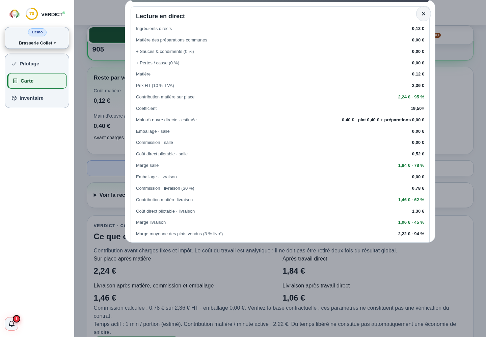

Comprendre le sujet
Boissons : compter les doses qui rapportent
Le prix d’une bouteille ne suffit pas à connaître la marge de ses ventes.
La réponse complète et ses limites
Le prix d’une bouteille ne suffit pas à connaître la marge de ses ventes. Définissez la dose, le volume utilisable, les offerts et les autres coûts par service. Le calcul retrouve les doses payantes et leur contribution. Cette contribution couvre encore le personnel, les locaux et les autres charges du bar.
Comprendre
La méthode, en clair.
LES POINTS QUI CHANGENT LA LECTURE
La méthode, en clair.
Des repères à appliquer dans votre établissement. Le détail reste accessible, sans perdre le fil.
Passer du contenant aux doses
Utilisez une seule unité de volume. Une bouteille de 75 cl contient 750 ml ; une dose de 12 cl contient 120 ml. Le rendement dépend du volume réellement servi et des pertes mesurées.
Ne supposez pas que le reste est toujours perdu. S’il demeure utilisable, c’est du stock ; s’il est jeté, documentez-le. Le simulateur attribue ici le coût entier du contenant au scénario, ce qui rend cette convention visible.
Distinguer offert et perte
Une dose offerte a été servie, avec un coût mais sans vente. Un renversement réduit le volume utilisable. Les compter deux fois surestime le coût. Rapprochez doses enregistrées et variation de stock pour investiguer un écart.
Verre, garniture ou frais variables peuvent s’ajouter au produit. Le personnel du bar et les charges communes se lisent ensuite à l’échelle du service.
Calculer
LE LABORATOIRE
Vos hypothèses.
Une lecture immédiate.
Modifiez les données, observez le résultat, puis vérifiez ce que le calcul permet de conclure.
Interpréter
UN SCÉNARIO, JUSQU’AU BOUT
Le calcul, jusqu’au bout
Une bouteille, six doses servies
Une dose est offerte. Le calcul impute l’achat de 12 € et les autres coûts des six doses, y compris l’offert.
Exemple fictif · hypothèses modifiables
| Doses servies | 6 |
|---|---|
| Ventes de cinq doses payantes | 25 € |
| Contribution du contenant | 11,8 € |
Les montants sont arrondis pour la lecture.
Les calculs gardent leur précision.
Les questions qui restent
Les offerts changent-ils le coût par verre vendu ?
Oui. Ils consomment du produit sans créer de vente, ce qui réduit la contribution du contenant.
Puis-je comparer directement vin et cocktail ?
Seulement en tenant compte de leur recette, temps, pertes et volume de ventes. La seule marge matière en pourcentage ne suffit pas.
Sur quoi repose cette lecture
Les formules et hypothèses sont affichées pour être contrôlées. Les exemples chiffrés sont fictifs et ne constituent pas des statistiques de métier. Les définitions et repères institutionnels utilisés par Verdict sont regroupés dans les sources.
Agir
Votre prochaine action
Vérifiez le dosage réel d’une référence et rapprochez ses offerts des sorties de stock.
DANS L’APPLICATION VERDICT
Fiche d’un café réel du modèle fictif : quantité, coût et prix.

Capture réelle de Verdict — démonstration fictive Brasserie Collet. Fiche Café : coût et coefficient de la boisson.
Voir l’écran en grand
Lecture en direct
Coefficient
Coût direct pilotable · salle
LES CHIFFRES NE VIVENT PAS SÉPARÉMENT.
Reliez cette décision
au reste de votre activité.
Ventes, carte, inventaire : découvrez la lecture proposée par Verdict, avec vos données et vos hypothèses.